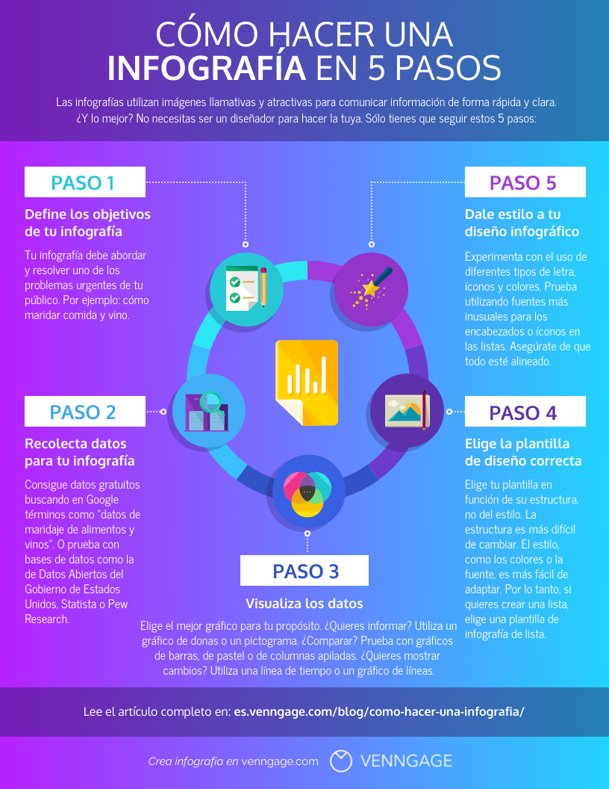
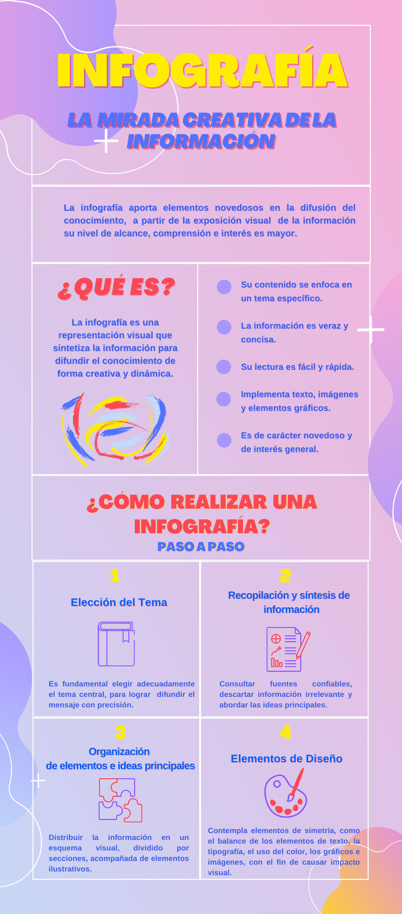
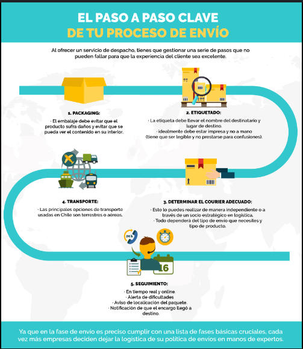

El lenguaje visual es un sistema de signos
sujeto a ciertas normas semióticas, que
debe ser codificado por un diseñador y
decodificado por un grupo de usuarios
para que la comunicación visual se lleve a
cabo. También es el sistema de
comunicación que se emplea en
la creación de mensajes visuales.
Mientras la comunicación visual permite
el intercambio de información a través de
la vista, el lenguaje visual permite
codificar un concepto y decodificar los
elementos que fueron vistos.
Elementos del Lenguaje Visual:
Punto:
Elemento primario de la expresión plástica.
No tiene dimensiones, sólo tiene posición.
Puede expresar Precisión, Intersección,
Interrupción. Puede configurar formas
a través de la textura, el valor y color
(puntillismo).

Linea:
Es el elemento resultante del movimiento
del punto. Tiene dirección, cuando esta es
invariable tenemos una línea recta.
Reemplazamos la palabra "movimiento"
por la palabra "tensión", que es la fuerza
interior del elemento.
Puede expresar suavidad, dulzura, agilidad rigidez, reposo, brusquedad, fragilidad, fuerza, inseguridad, imprecisión,
indecisión, temblor, movimiento, dirección, etc. Su función puede ser objetual,
de contorno, de sombreado o formando
texturas texturas.

Plano:
Es una superficie continua que tiene dos
dimensiones, largo y ancho, pero no espesor o profundidad. Los planos pueden ser
verticales, horizontales, inclinados, cóncavos, convexos, torcidos, distorsionados,
curvados, angulares, etc.

Signos visuales
Orden:
La forma a partir de la cual
los elementos se organizan y
establecen una narrativa
visual y simbólica.Por ejemplo:
la Proporción Áurea.
Esta surge de la división de un segmento
en dos, ”donde la longitud total a + b es al
segmento más largo “a” como “a” es al
segmento más corto “b” ”.

Unidad:
Pone en relación lo diferente.
Le proporciona entidad y lo
agrupa en un todo.
La composición también es un
conjunto de signos visuales
donde se aglutinan lo singular
con lo múltiple.

Jerarquización:
Una composición puede
considerarse ordenada
cuando posee una
relación concreta de
estructuración, es decir
donde convive una
relación de jerarquización/subordinación.
Implica organizar o clasificar de acuerdo a rangos o categorías. Con una jerarquización,
hay elementos que ocupan una posición superior o preponderante respecto a otros.

Armonía:
Se refiere a la forma en que
se coordinan el orden y la
unidad. Se aplica a lo largo de
la construcción de la obra
buscando el equilibrio
compositivo, lo que permite
una lectura ordenada.

Posición/Tensión:
Todo signo visual tiene una posición respecto del fondo. De
acuerdo a su posición en el
centro o al margen surgen
diferentes efectos de sentido,
creando transiciones y tensiones. (Rudolf Arnheim)

Gravedad/Ingravidez:
Nuestros hábitos perceptivos
nos dicen que lo más pesado
se encuentra en la parte
inferior del campo visual.

Se refiere a la comunicación mediante
imágenes.
Transmite ideas de forma más rápida.
Transmite uno o varios sentidos.
Refuerza un sentido.
Amplía un sentido.
Ventajas de la Comunicación Visual
- Facilita la comprensión.
- Comunica de manera más rápida y eficiente.
- Crea identidad.
- Mejora la comunicación intercultural.
- Llega al receptor analfabeto.
- Ayuda en la comunicación oral.
- Es más cómoda y atractiva.
Elementos del Proceso comunicativo:
Signo:
El signo lo podemos definir como aquello
que hace referencia a otra cosa, que está
ausente. Ferdinand de Saussure, uno de
los fundadores de la Semiología
consideraba los signos como la unidad
básica del significado y definía sus dos
partes

Símbolo:
Informa de un significado y evoca valores y
sentimientos, representando ideas de una
manera metafórica.
La conexión entre significante y
significado en un símbolo es arbitraria y
debe ser aprendida culturalmente ya que
responde a un código social.

Señal:
Tiene por finalidad cambiar u originar una
acción sobre el receptor. Nos indica que
debemos prestar atención a un hecho en
un momento determinado o modificar una
actividad prevista. Como las señales de
tránsito.

Marca:
La marca es un rasgo distintivo que forma
parte de un mensaje visual de afirmación,
de aviso o de diferenciación. Marcar en una
prenda con nuestra firma, adornar nuestra
indumentaria, el uniforme de cada equipo
deportivo, los tatuajes, los piercings, son
marca de nuestra identidad.

Ícono:
Es un signo que mantiene una similitud
con el objeto representado.
Existe una correspondencia entre el
significante y el significado.
Las fotografías, los dibujos, las pinturas y
las esculturas naturalistas son ejemplos de
íconos.

PRACTICA(infografia)
Explicar el recorrido visual ,que hace y el por que ,a que publico va dirigido,los niveles de lectura, y que la jerarquización

RTA:La infografía está dirigida al público en general y tiene como objetivo mostrar la evolución del reloj desde el año 1300 hasta el 2024.
Recorrido visual:
Título Central: El recorrido visual comienza con el título "Evolución del reloj 1300-2024", que está centrado en la parte superior de la infografía. Esto es lo primero que capta la atención del espectador.
Secuencia Cronológica:
o 1300 Reloj Mecánico: La vista se dirige hacia la esquina superior izquierda donde se encuentra el primer reloj, acompañado de su descripción.
o 1657 Reloj Péndulo: Luego, el recorrido visual sigue hacia la derecha para el siguiente hito en 1657.
o 1880 Reloj Pulsera: La mirada se mueve hacia abajo a la izquierda para el reloj de 1880.
o 1920 Reloj de Cuarzo: Finalmente, se dirige hacia la derecha para el reloj de 1920.
Reloj Moderno: La infografía concluye con una imagen más grande y a color del reloj moderno en la parte inferior izquierda, destacándose del resto para enfatizar el punto final de la evolución mostrada.
Público Objetivo:La infografía está destinada al público en general, especialmente a personas interesadas en la historia y evolución de la tecnología.
Niveles de lectura:
1. Primario (Título y Años): Lo primero que se lee es el título y los años, proporcionando un contexto inmediato y fácil de entender.
2. Secundario (Descripciones Breves): El lector puede seguir con la descripción breve de cada tipo de reloj, lo que ofrece una comprensión rápida de la evolución cronológica.
3. Terciario (Detalles Específicos): Para los interesados en más detalles, están las secciones específicas como "Forma", "Uso" y "Funcionalidad", que ofrecen información adicional sobre cada tipo de reloj.
Jerarquización:
1. Título Principal: El título está claramente jerarquizado en la parte superior y centrado, atrayendo la atención inicial.
2. Cajas de Información: Las cajas de información (FORMA, USO, y FUNCIONALIDAD) están organizadas uniformemente, facilitando la lectura y comparación.
3. Imágenes de los Relojes: Las imágenes de los relojes mantienen un tamaño similar, lo que ayuda a la uniformidad visual, excepto la imagen del reloj moderno, que es más grande y en color para destacar su relevancia.
4. Línea Temporal: Las fechas están resaltadas en color rojo, lo que asegura que los lectores comprendan rápidamente el orden cronológico.

RTA:Público Objetivo: La infografía está dirigida al público en general, especialmente a aquellos que desean aprender cómo crear infografías de manera efectiva y sencilla.
Recorrido Visual:
1. Imagen Central: El recorrido visual comienza con la gran imagen central que ocupa una parte significativa de la infografía. Esta imagen es llamativa y nos da un adelanto visual de los pasos a seguir.
2. Título Principal: Inmediatamente después, la vista se dirige al título principal "CÓMO HACER UNA INFOGRAFÍA EN 5 PASOS", que está centrado en la parte superior y en letras grandes.
3. Subtítulos y Cuerpo Principal: El recorrido visual sigue un patrón en forma de "U" que guía al lector a través de los pasos de la siguiente manera:
o Paso 1: Ubicado en la parte superior izquierda.
o Paso 2: Debajo del Paso 1, en la parte inferior izquierda.
o Paso 3: En el centro, directamente debajo de la imagen principal.
o Paso 4: A la derecha del Paso 3, en la parte inferior derecha.
o Paso 5: Arriba del Paso 4, en la parte superior derecha.
Jerarquización:
1. Título Principal: El título está claramente jerarquizado en la parte superior, destacándose por su tamaño y la palabra "INFOGRAFÍA" resaltada, lo que lo hace fácilmente visible y capta la atención inmediatamente.
2. Imagen Central: La imagen central es grande y ocupa una posición prominente, lo que ayuda a atraer la atención y proporciona un punto de enfoque inicial.
3. Subtítulos de los Pasos: Los subtítulos (PASO 1, PASO 2, PASO 3, PASO 4 y PASO 5) están distribuidos simétricamente y en un orden lógico que facilita la navegación. Cada uno tiene su propio espacio y está acompañado de íconos relevantes que ayudan a identificar visualmente cada paso.
4. Cuerpo del Texto: El texto debajo de cada subtítulo proporciona detalles adicionales. El diseño asegura que el contenido sea fácil de leer y seguir.
5. Pie de Página: La información menos importante, como el pie de página, ocupa todo el ancho inferior con el texto centrado, asegurando que no interfiera con el contenido principal pero sigue siendo accesible.

RTA:Público Objetivo: La infografía está dirigida al público en general, especialmente a aquellos interesados en aprender sobre la creación y el uso de infografías como herramienta de comunicación.
Recorrido Visual:
1. Título Principal: El recorrido visual comienza en la parte superior con el título "INFOGRAFÍA", que se destaca por su color amarillo brillante y su gran tamaño.
2. Subtítulo: Justo debajo del título principal, se encuentra el subtítulo "LA MIRADA CREATIVA DE LA INFORMACIÓN" en un color azul claro, que también está centrado.
3. Texto Informativo Inicial: La vista continúa hacia el texto informativo que está centrado y explica brevemente qué aporta una infografía.
4. Columna Izquierda:¿Qué es?: A la izquierda, encontramos el subtítulo "¿QUÉ ES?" en rojo, que capta la atención. Debajo hay un párrafo explicativo y una imagen ilustrativa.
5. Columna Derecha:Características: A la derecha, vemos una lista de características que detalla la información proporcionada en la columna izquierda.
6. Subtítulo Central: En la sección central inferior, hay un subtítulo llamativo "¿CÓMO REALIZAR UNA INFOGRAFÍA? PASO A PASO" en rojo, centrado y destacado.
7. Cuatro Columnas Inferiores: Debajo del subtítulo central, hay cuatro columnas numeradas del 1 al 4:
o Elección del Tema (1): Primera columna a la izquierda.
o Recopilación y Síntesis de Información (2): Segunda columna, a la derecha de la primera.
o Organización de Elementos e Ideas Principales (3): Tercera columna, a la derecha de la segunda.
o Elementos de Diseño (4): Cuarta columna, a la derecha de la tercera.
Jerarquización:
1. Título Principal: El título principal "INFOGRAFÍA" está claramente jerarquizado en la parte superior, destacándose por su tamaño y color amarillo, lo que lo hace fácilmente visible.
2. Subtítulos: Los subtítulos están centrados y tienen un tamaño y color que los hace destacar, ayudando a organizar la información y guiando al lector a través de la infografía.
3. Texto Informativo: Los párrafos de texto tienen un tamaño menor que los títulos y subtítulos, lo que indica que son detalles secundarios pero importantes.
4. Listas y Columnas: Las listas y columnas están claramente separadas y organizadas de manera que la información sea fácil de seguir. Las numeraciones en las columnas inferiores ayudan a guiar el orden de lectura.

RTA:Pubico Objetivo:La infografia al publico en general,especialmente a aquellos en aprender los procesos para enviar paquetes.
Recorrido visual:
1.Imagen central: Lo primero que vemos es una imagen centrada que ocupa gran parte de la infografia que nos da un adelanto tema .
2.Titulo principal: Arriba de todo por arriba centrado con el titulo "EL PASO A PASE CLAVE DE TU PROCESO DE ENVIO" que se destaca por su tamaño y color naranja.
3.Texto inicial: Debajo del titulo hay un texto centrado que aporta a la infografia y despues el recorrido sigue de izquierda a derecha y de derecha a izquierda con imagenes y pasos:
o Paso 1:esta ubicado a la izquierda.
o Paso 2:esta ubicado a la derecha.
o Paso 3:esta ubicado a la derecha debajo del paso 2.
o Paso 4:esta ubicado a la izquierda depaso del paso 1.
o Paso 5:esta ubicado debajo de todo centrado.
Jerarquizacion:
1.Imagen: Lo primero que vemos es la imagen debido a su gran tamaño y que ocupa gran parte de la infografia.
2.Titulo principal: Lo siguente es el titulo arriba de todo centrado con un tipo de letra mas grande y con color blanco y naranja
3.Subtitulo: El subtitulo es de menor tamaño que el titulo y su letra tiene peso por lo que despues del titulo principal es lo que nos atrae acompañado de una imagen con texto informativo.
4.Texto informativo:Los parrafos de textos son de menor tamaño que los titulos y subtitulos lo cual son detalles secundarios pero importante .


Recorrido visual :Lo primero que vemos es un imagen que ocupa todo el ancho de la infografía que te adelanta de lo que se trata ,después tiene un subtitulo que debajo contiene texto informativo,debajo de eso esta la imagen que aparecía antes que lo primero que vemos es el titulo central con su tamaño y peso en las letras que de salen varias flechas en todas las dericiones que llevan a imágenes con un subtitulo.Despues le sigue un subtitulo que esta centrado y muestran 3 imágenes simétricas con el mismo alto ,ancho y espacio entre si,después le sigue otro subtitulo centrado con una imagen que ocupa todo el ancho dividido en 2 colores con subtítulos con solor similar a la del fondo y se repite el patron ,la imagen que le sigue es otra que al centro de la imagen hay 4 simbolos con el fondo de distintos colores que el recuadro con la información es el mismo que el del símbolo identificando de que símbolo es la información
Publico objetivo: Es para un publico en general especialmente para aquellas personas que quieran aprender sobre dietas saludables.
Jerarquización: Tiene buena jerarquía ,toda la información esta centrada dejando un espacio simetrico es cada información.
La jerarquización es clara, con títulos grandes y subtítulos que destacan, lo que facilita la navegación y comprensión de la información.
Nivel de lectura: El nivel de lectura está diseñado para ser accesible y fácil de seguir para un público general. Esta infografía podría ser adecuada tanto para una revista de salud como para una página web sobre nutrición.
Elementos del proceso comunicativo:
Signo:En donde se encuentra la imagen que esta centrada tiene muchas flechas en todas las direcciónes y cada dirección apunta un icono.
Icono: En la infografías hay icono que mantienen una similitud con un objeto,como el de una ambulancia,un pan ,un pez,etc.
Símbolo: Hay otra imagen que tiene cuatro símbolos en el medio al centro de la imagen que representan una idea compañada por un color especifico.como el del corazón con el color rojo y que el texto habla de reducir el riesgo en enfermedades haciendo referencia que el corazón es el ser humano,la hoja de color verde y que el texto habla del medio ambiente,una bolsa con dinero de color amarillo y que el texto dice que un producto es accesible haciendo refencia que al color del billete que usa para comprar productos. También el símbolo de las personas de color azul que el texto habla del mundo haciendo referencia al planeta tierra que en gran parte es de color azul por el agua.

Recorrido visual: lo primero que vemos es el titulo arriba de todo que esta centrado y por su gran tamaño y peso de las letras,debajo le sigue un texto con información, esto hace una lectura de izquierda a derecha y de derecha a izquierda con una serie de pasos debido a que abajo a la izquierda hay un numero(1) con una burbuja que de 1ra generación seguido con otra burbuja con texto informativo seguido de una imagen,numero(2) debajo del texto informativo del paso 1a la derecha se encuentra el paso 2 seguido de una imagen y el texto informativo del texto 2 se encuentra a la izquierda debajo del paso 1 y este patron continua hasta el paso 5.
Publico objetivo: Es para un publico en general especialmente para aquellas personas que quieran aprender sobre la historia de las herramientas tecnológicas.
Jerarquización:Tiene una buena jerarquización ,lo primero que vemos es el titulo con la tipografia mas grande subrayada y centrada ,después la información se encuentra en el medio ocupando la mayor parte de la infografía y las imágenes ocupan menos espacio dejando un poco de espacio en cada una de ellas como información visual secundaria y los subtítulos resaltan y llaman la atención por ser mas grandes que la tipografia del texto t con un fondo azul.
Nivel de lectura:El nivel de lectura está diseñado para ser accesible y fácil de seguir para un público general. La infografía podría ser adecuada tanto para una revista educativa como para una página web dedicada a la educación tecnológica.
Elementos del proceso comunicativo:
Signo: en cada globo azul con un subtitulo tiene una flecha que indica al globo de color blanco con el texto informativo haciendo referencia de donde viene el subtitulo.

Recorrido visual : Lo primero que vemos es el titulo que esta arriba a la izquierda que se destaca por su tamaño y peso en las letras con una gota de agua como fondo que al lado hay una contenedor que tiene numero (1) con un subtitulo de menor tamaño que el titulo con texto informativó.Despues de ver el contenedor con el (1) te hace pensar que existe otro con el numero(2) haciendo refencia a una serie de pasos ,el contenedor(2) se encuentra abajo a la izquierda,el contenedor(3) arriba a la izquierda del contenedor(2) y el contenedor(4 )a la derecha del contenedor(3).
Publico objetivo: Es para un publico en general especialmente para aquellas personas que quieran aprender sobre el ciclo del agua.
Esta bien pero modificar con lo del CHAT(GPT): Corrección: Correcto, pero más específicamente, está dirigida a niños y educadores que buscan una forma sencilla y visual de explicar el ciclo del agua.
Jerarquización: tiene buena jeraquizacion de los elementos acompañados y imágenes animadas que ayudan a entender la información mas fácil ,completando los espacios para que no se pierda peso en algunas partes de la infografía y se encuentran flechas que indican hacia donde continua la información debido a que no es un lectura norma de izquierda a derecha.
Nivel de lectura:El nivel de lectura está diseñado para ser accesible y fácil de seguir para niños. Esta infografía podría ser adecuada tanto para una revista educativa como para una página web dedicada a la educación infantil.
Elementos del proceso comunicativo:
Las imágenes animadas del sol, la nube y el iglú actúan como signos que representan elementos del ciclo del agua. Aunque son representaciones simplificadas, ayudan a los niños a entender el proceso.